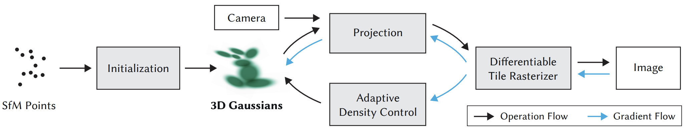
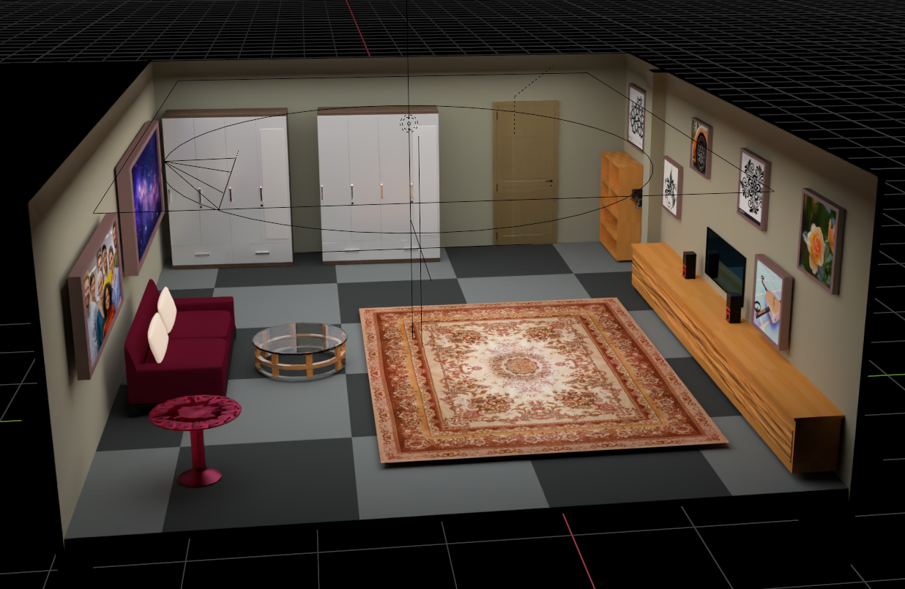
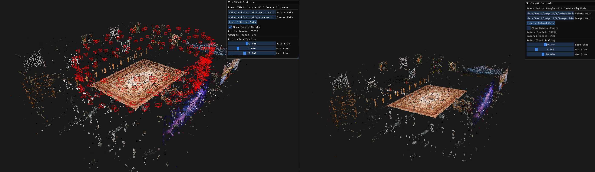

Why build a digital twin of a room?
- Experimental psychology & behavioural research want reproducible testing environments
- A useful twin preserves geometry, appearance — and motion (a 4D scene)
- Reconstruction accuracy is a prerequisite for experiment validity, not an aesthetic choice

Views of the indoor environment used throughout this work
The task
Why naive per-frame reconstruction fails
Computational cost
Retraining each frame from scratch: 1 min of 30 fps video ⇒ 5.4 × 10⁷ optimizer steps — the static background is re-learned 1,800 times.
Lost correspondence
Free optimization gives no guarantee the same splat tracks the same physical feature — trajectories and motion analysis become impossible.
Colour-hallucinated motion
The loss is happy to repaint splats instead of moving them — subjects smear into the background as flat "paintings".
Storage growth
One independent Gaussian field per frame grows linearly with time × splat count — untenable for minutes-long captures.
Three eras of 3D reconstruction
Geometric
Implicit neural
Explicit radiance fields
3D Gaussian Splatting in 60 seconds
- Scene = millions of soft ellipsoidal particles: position μ, covariance Σ = R S Sᵀ Rᵀ, opacity, spherical-harmonic colour
- Rendered by splatting — project to 2D, depth-sort, alpha-blend in a tile rasterizer → >100 FPS
- Trained end-to-end through a differentiable rasterizer, with adaptive clone / split / prune density control
- Entire scene serializes to a single PLY file — inspectable, portable

The 3DGS optimization loop (Kerbl et al., 2023) — seeded by SfM points
From points to splats INTERACTIVE
Dynamic 3DGS today: ever more machinery
Deformable 3DGS
Canonical splat set + deformation MLP that must memorise every trajectory in the scene.
4D-GS
HexPlane spatio-temporal bases + decoder MLP — imposes a low-rank assumption on motion.
SpaceTime Gaussians
Per-splat polynomial trajectories — cheaper inference, enlarged parameter set per splat.
Each adds auxiliary machinery — with its own training dynamics and failure modes.
Is an almost machinery-free extension sufficient for indoor, static-camera captures?
Research questions
Q1Structure
Can a dynamic indoor scene be reconstructed from a fixed first-frame baseline plus direct tracking — no neural networks?
Q2Physical accuracy
Does freezing colour (spherical harmonics) force the optimizer to capture true physical motion instead of repainting?
Q3Efficiency
How much compute does a linear velocity prediction save when warm-starting each frame's optimization?
+ a methodological goal: build the full evaluation stack — synthetic ground-truth dataset, COLMAP pipeline, interactive C++ renderer, per-frame PLY format.
Proposed pipeline
The static–dynamic split is emergent: background splats receive ≈ zero gradient and stay put; splats on moving subjects are pushed along the motion — no segmentation model needed.
Three constraints do all the work
1Frozen topology
No clone / split / prune after frame 0 ⇒ |𝒢ₜ| = |𝒢₀| and a 1-to-1 splat correspondence across the whole video.
2Frozen colours
SH coefficients locked after frame 0 ⇒ motion must be explained geometrically. Matches physics: reflectance is stable, position is not.
3Velocity warm start
Constant-velocity prediction before each frame ⇒ initial error is bounded by acceleration, not velocity — sub-pixel at 30 fps.
Tracking with a frozen splat set INTERACTIVE
Why the warm start pays off INTERACTIVE
A synthetic room with perfect ground truth
- Full room modelled in Blender — varied materials, high-frequency textures, complex occlusion
- Mathematically exact intrinsics & extrinsics exported via
bpy— isolates 3DGS errors from SfM noise - Ideal pinhole camera — zero lens distortion
- Drone-like oscillating orbit for uniform view coverage

Initialisation & custom inspection tooling
- COLMAP sparse SfM: SIFT features → exhaustive matching + RANSAC → incremental mapping + bundle adjustment
- Run once, on frame 0 — static cameras keep calibration valid for the whole video
- Custom C++ / OpenGL viewer: point clouds, GPU-instanced camera frusta, ImGui controls — later extended to render static & dynamic Gaussians

The actual C++ viewer: reconstructed cloud + camera "ghosts"
Experimental evaluation
Static baseline quality — PSNR / SSIM / LPIPS of the 30k-iteration static reconstruction vs held-out ground-truth views.
Velocity-prediction ablation — tracking quality and convergence speed with --no-velocity vs warm start (Q3).
Colour-freeze ablation — quantifying colour-hallucinated motion when SH coefficients are left free (Q2).
Real-world capture — multi-camera rig recording of an actual room with a moving subject.
Contributions & what's next
Contributions
- A minimal, machinery-free dynamic 3DGS pipeline for indoor multi-view video
- Emergent static–dynamic decomposition — no segmentation networks
- Synthetic benchmark with analytic ground truth + full COLMAP tooling
- Interactive C++ renderer & a unified per-frame PLY format
Future work
- Quantitative comparison vs Deformable 3DGS / 4D-GS (pending)
- Towards online / real-time tracking — closed-form updates instead of inner loops
- Real-world capture rigs and longer sequences
- Deployment in behavioural-research digital twins
Conclusions are preliminary — final findings will follow the completed evaluation.